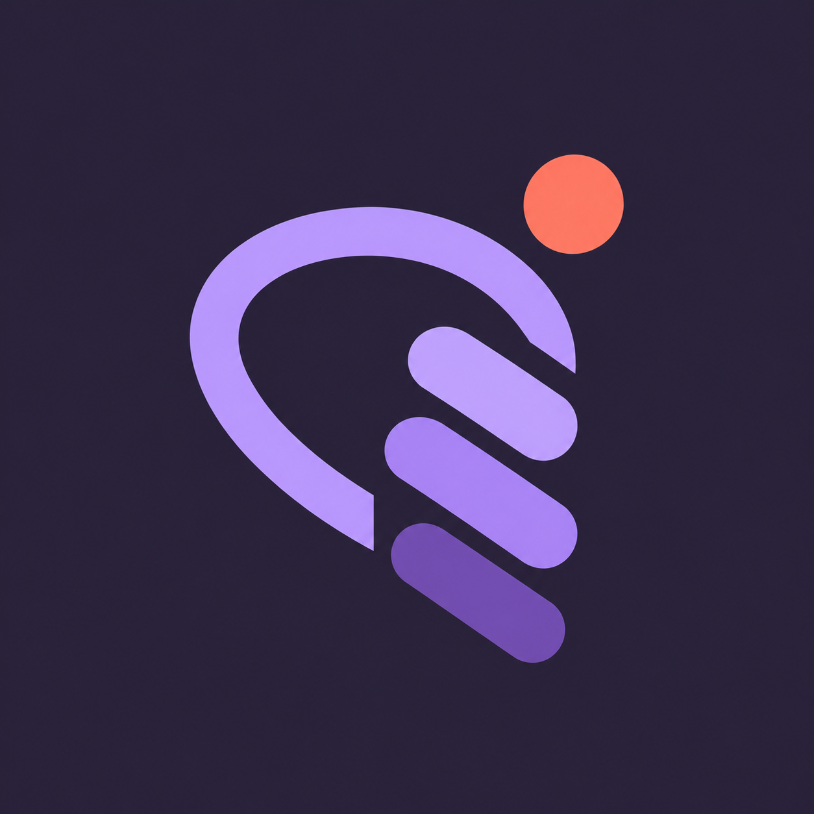
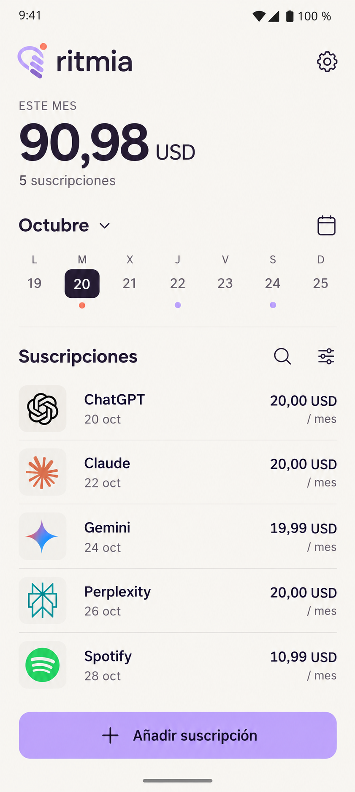
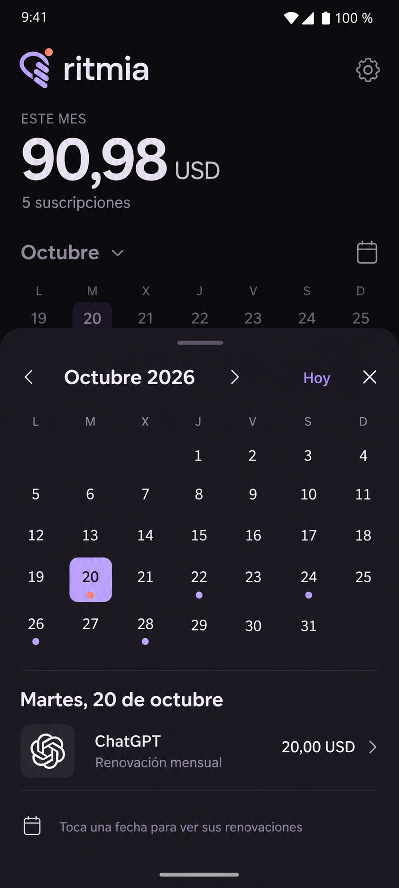
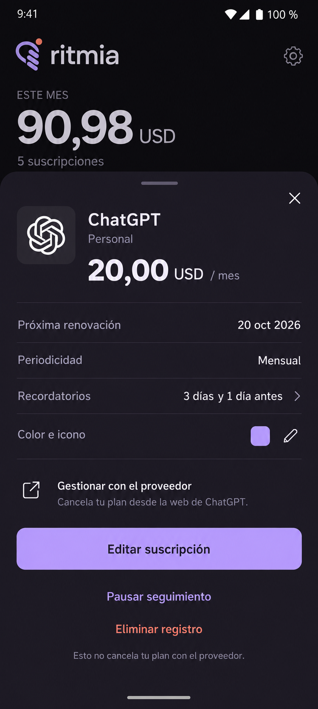
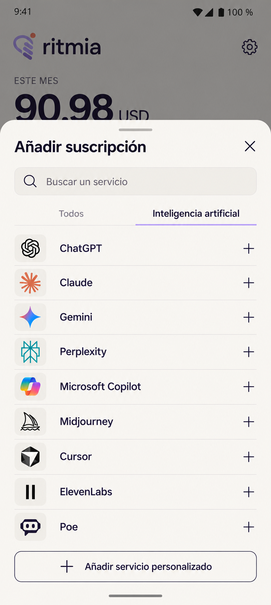

ritmiaUna pantalla.
Todo a tu ritmo.
Cuatro referencias para una app de suscripciones sobria, clara y pensada también en oscuro.

Inicio · claro
El mes, las próximas fechas y las suscripciones en una sola vista.
Ver prompt
Calendario · oscuro
Un modal de calendario con las renovaciones del día.
Ver prompt
Detalle · modal
Importe, recordatorios y acciones de seguimiento.
Ver prompt
Catálogo · IA
Buscador y servicios de inteligencia artificial.
Ver prompt